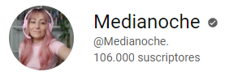
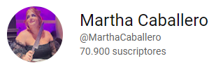
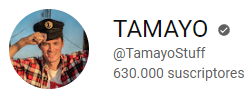
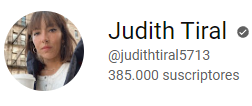

Mi top 5 de Youtubers
Listado interactivo de mis Youtubers favoritos
-
Medianoche
Canal que denuncia el Sharenting en las redes sociales
-
Martha Caballero
Su temática es el "true crime"
-
Tamayo
Reportajes de investigación p.e.:Sectas,pseudociencias...
-
Reacción en Makena

Canal variado comentando lo que pasa en tv
-
Judith Tiral
Curiosidades de la vida diaria